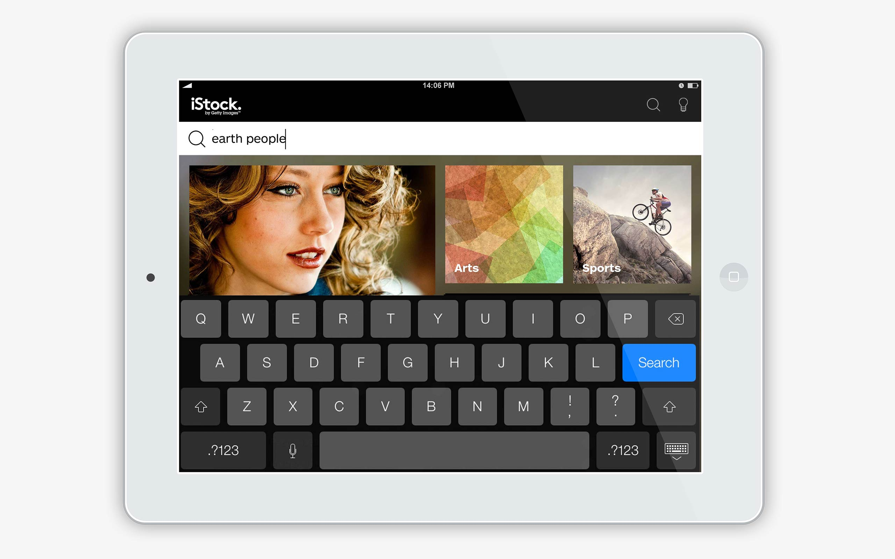
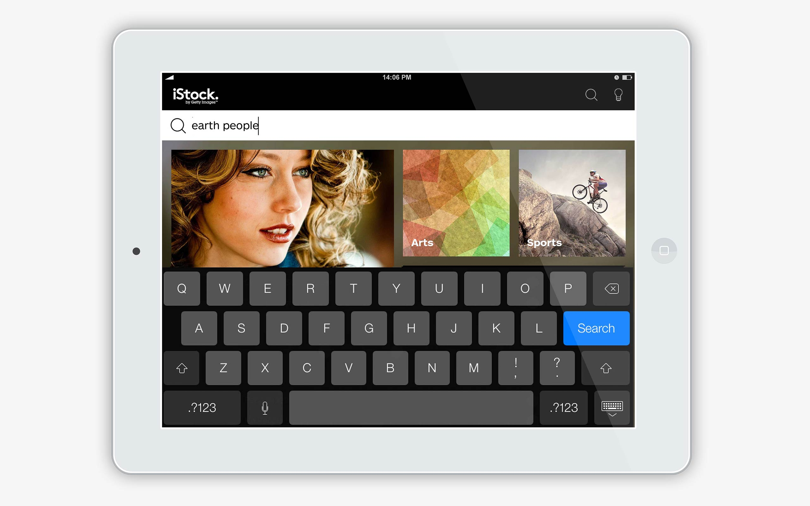

iStock iPad App
Getty Images iStock brand had a mobile app that was designed for phones, but using the app on a tablet was a poor experience. From previous user research we learned that our users preferred to use a tablet to browse and collect imagery. My challenge was to lead the UX design effort for the tablet experience and assist the visual designer in applying a visual language. The priorities for the app was to provide easy access to browsing, searching, saving, and sharing imagery.
Defining the User Experience
The design process unfolded in collaboration with development, utilizing a design approach that was based in loose concepts and sketches.


Design iteration
Wireframes were also done as quick sketches as they changed frequently in our collaboration with the development team. These sketches illustrate early thinking around the lightbox veiw, with some initial ideas on the interactive elements.

Design iteration
As we started to flesh out the interactions, I created digital sketches to illustrate the steps in each interactive flow. Here’s an example of swiping between the dashboard, search results, and lightbox views.
Final designs
I paired with a visual designer to define the visual language, and to apply that language throughout the app. I also created designs for some of the interactive elements that were finalized later in the process.
 
